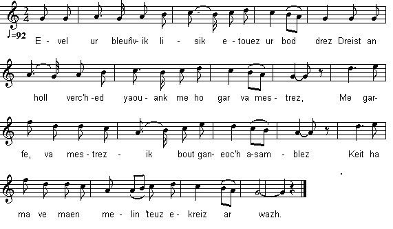

Evel ur bleuñvik lisik
Semblable à la fleur de lis
Like a lily blossom
Chant collecté par Théodore Hersart de La Villemarqué
dans le 1er Carnet de Keransquer (p. 281).

Mélodie
Arrangt Christian Souchon (c) 2015
|
A propos de la mélodie Inconnue. Remplacée par "Alieu mat" (Bons conseils) tiré du recueil "Guerzenneu ha soñnenneu Bro-Guened / Chansons populaires du Pays de Vannes" de Loeiz Herrieu et Maurice Duhamel, édité en 1911,; chanté par Jeanne-Louise Le Pogam du Grand-Hanvot en Ploemeur. A propos du texte Selon l'indication donnée par M. D. Laurent dans "Aux Sources du Barzaz Breiz", p. 257, ce chant doit être rapproché de "Han de boursuiù me chanj" (Je vais tenter ma chance), un chant vannetais, noté à Quéven et publié par Loeiz Herrieu dans "Gwerzenneu ha soñneneu Bro Guened" (Chants sérieux et gais du Vannetais). |
About the tune Unknown. Replaced here by "Alieu mat" (Good advice) from the collection "Guerzenneu ha soñnenneu Bro-Guened / Chansons populaires du Pays de Vannes" by Loeiz Herrieu and Maurice Duhamel, published in 1911; sung by Jeanne-Louise Le Pogam from Grand-Hanvot near Ploemeur. About the lyrics As stated by M. D. Laurent in "Aux Sources du Barzaz Breiz", p. 257, this song should be paralleled with "Han de boursuiù me chanj" (I'll try my luck), a Vannes dialect song recorded at Quéven and published by Loeiz Herrieu in "Gwerzenneu ha soñneneu Bro Guened" (Laments and ditties of the Vannes district). |
|
BREZHONEK p. 281 1. Evel ur bleuñvik lisik e-touez ur bodenn drez, (teir w.) Dreist an holl werc'hed yaouank, me ho gar, va mestrez. 2. Me garfe, va mestrezik, boud ganeoc'h asamblez (teir w.) E-keit ha ma vez maen milin a teuz e-kreiz ar wazh. 3. Ar maen milin , va dousik, birviken na teuzo (teir w.) Na garantez 'trezomp-ni birviken na vanko. KLT gant Christian Souchon. |
TRADUCTION FRANCAISE p. 281 1. Semblable à la fleur de lis parmi l'épineux buisson, (ter) Plus que toutes vos amies je vous aime avec passion. 2. Je voudrais, ma bien-aimée, être en votre compagnie, (ter) Le temps qu'il faut à la meule pour fondre sous la pluie. 3. La meule du moulin, ma chère, jamais ne fondra (ter) Et jamais l'amour, de même, entre nous ne manquera. Traduit par Christian Souchon |
ENGLISH TRANSLATION p. 281 1. Like a candid lily blossom amidst brambles and thorns (thrice) I love you, the fairest daughter the earth has ever borne. 2. I wish I could stay, my sweetheart, as a long time with you (thrice) As a millstone, to dissolve, down in a river must do. 3. The mill stone will never ever dissolve, dear, as you know (thrice) Nor will ever the reserve of love between us be low. Translated by Christian Souchon |